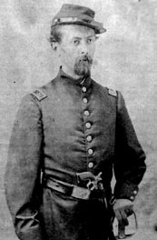

|

NAME: William Hemstreet
BORN: 1843
DIED: 1917
ALLEGIANCE: Union
HIGHEST RANK: Lieutenant Colonel
UNITS: 157th Illinois Infantry, 18th Missouri Infantry
RECORD: Enlisted in 57th Illinois in February 1862.
Promoted to lieutenant, 18th Missouri, in April 1862.
Promoted to captain in April 1863. Participated in
recruiting raids for the 54th Massachusetts in 1863 and
Sherman's march through Georgia in 1864. Mustered out as a
brevet lieutenant colonel.
|
|
William Hemstreet was a confidential stenographer for the
Illinois Central Railroad's executive committee when the
Civil War began. A native New Yorker, he was far from home,
but he kept abreast of the happenings in the East. When the
Confederates bombarded Fort Sumter, Hemstreet, then only 17
years old, left his job and volunteered for service. Because
of his clerical skills, he was named lieutenant aide-de-camp
for Brigadier General Richard Kellogg Swift of the Illinois
Militia. Hemstreet recalled their first meeting in his
postwar memoirs: "I reported to General Swift, who brought
his big hand down on my back and said, 'Shorthand, can you
stand fire?' ...After replying 'I'll go where you go,
General,' he brought his big hand down on my back again and
said, 'Good...'"
Hemstreet followed Swift to Cairo, Illinois, the
strategic hub at the confluence of the Mississippi and Ohio
Rivers. There, he served under Colonel (later Brigadier
General) Benjamin M. Prentiss. As the only stenographer in
the entire region, Hemstreet was indispensable to both his
commanders.
Hemstreet served as a drill officer at Camp Douglas
outside Chicago, in February 1862. Then he enlisted as a
private in the 57th Illinois Infantry and carried a musket
at Fort Donelson and Shiloh, Tennessee, later that year. At
Shiloh, "Hemmy," as his fellow soldiers knew him, received a
commission as lieutenant in the 18th Missouri Infantry. By
April 1863, he was a captain, and accompanied Colonel Robert
Gould Shaw of the 54th Massachusetts Infantry on recruiting
raids in the South to add troops to Shaw's regiment of black
soldiers. Next, Hemstreet acted as provost marshal and judge
advocate on Major General William T. Sherman's march through
Georgia. Southerners accused Sherman of brutality, but
Hemstreet later wrote, "I never saw an act of vandalism,
heard an improper word or an affront to man, woman or child,
nor knew an occupied house to be fired."
After the Battle of Bentonville, North Carolina, in March
1865, Hemstreet received a 30-day leave and returned home to
Brooklyn. While he was in New York the war ended, and he
received an extension of his leave. As a result, he missed
the Grand Review of the Armies on May 18 in Washington, D.C,
but he returned in time to hear Sherman's farewell to his
troops, and was mustered out as a brevet lieutenant colonel.
Hemstreet spent the next few months traveling throughout the
United States, Canada, and Europe, and published a book
detailing his journeys. He later became a lawyer and ran
unsuccessfully for City magistrate in Brooklyn and for the
U.S. Congress. He died in duly 1917.
Source: Civil War Times Illustrated
36:5 (October 1997), 104.
|